Thực Hành Tạo Ảnh
Vòng Lặp Tinh Chỉnh
Bức ảnh đầu tiên hiếm khi hoàn hảo. Chìa khóa là biết "nói chuyện với AI" qua vòng lặp sau:
Ví dụ: Thấy camera quá gần Đổi prompt thành Wide Shot Thấy sai ánh sáng Thêm "cinematic lighting" Generate lại.
Cấu trúc prompt tham khảo
Sắp xếp từ tổng quan (Khung hình) đến chi tiết (Nhân vật, Môi trường)
- Chủ thể & Mô tả: Nhân vật trung tâm, vẻ bề ngoài và nét mặt.
- Cỡ cảnh & Góc máy: Khung hình rộng/hẹp, góc cao/thấp (vd: Medium shot, Low angle).
- Hành động: Trạng thái, cử chỉ tại khoảnh khắc đó (vd: cầm gươm, chạy trốn).
- Bối cảnh & Ánh sáng: Không gian xung quanh và tính chất ánh sáng tạo Mood.
- Negative: Các chi tiết KHÔNG muốn xuất hiện (vd: text, blur, logo).
Ví dụ áp dụng bằng tiếng Anh (Hiệu quả nhất với hệ thống AI):
"Dạ con thưa Quý Thầy và HD, đây là một chia sẻ nhỏ về cách cơ bản để tạo hình mà khi mới bắt đầu tập làm ạ..."
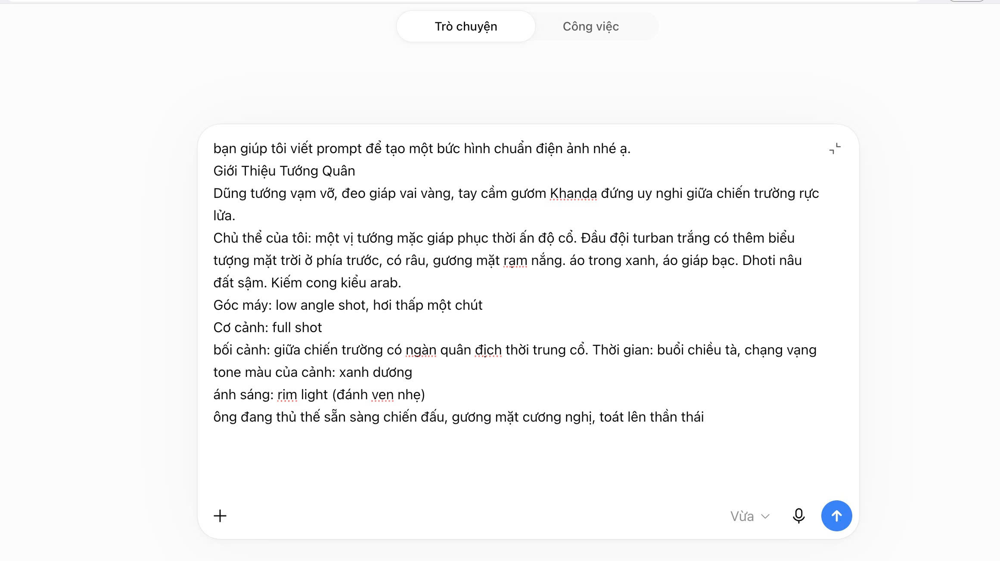
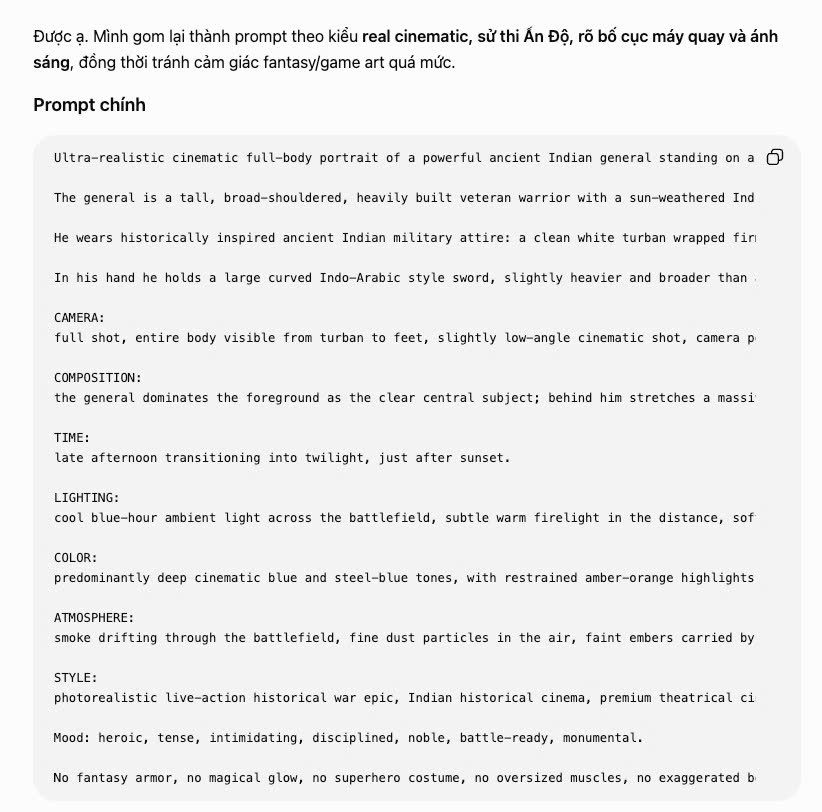
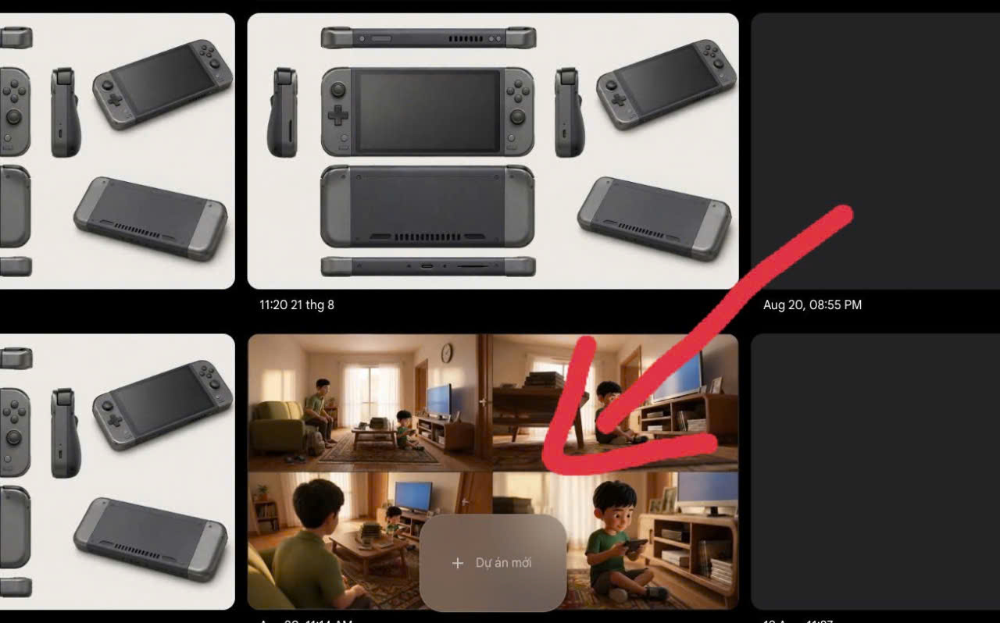
-->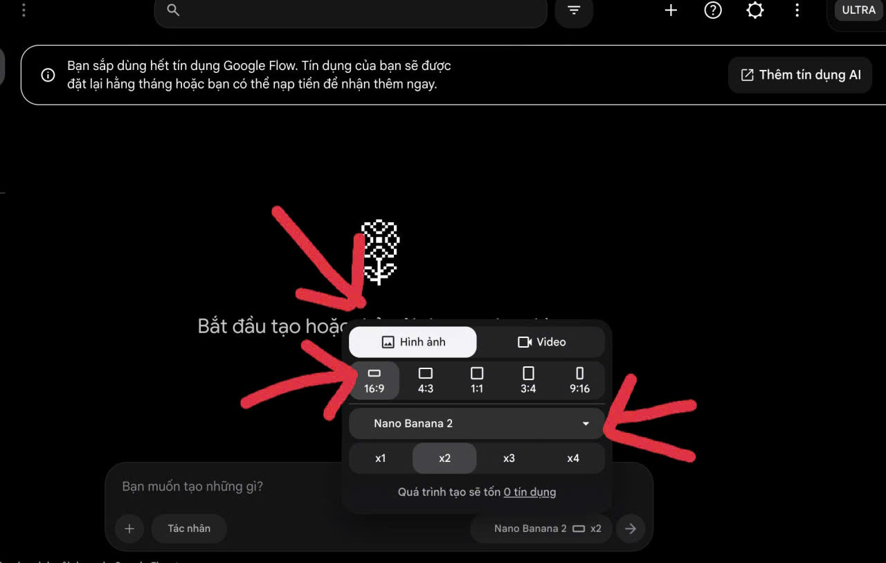
-->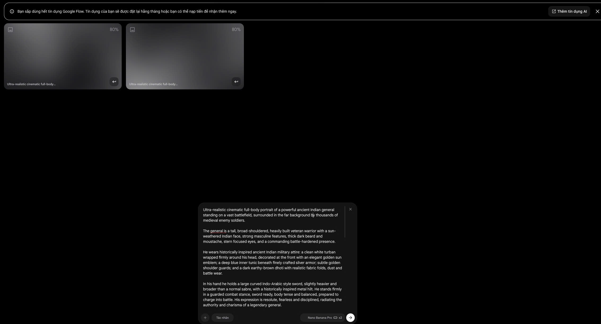
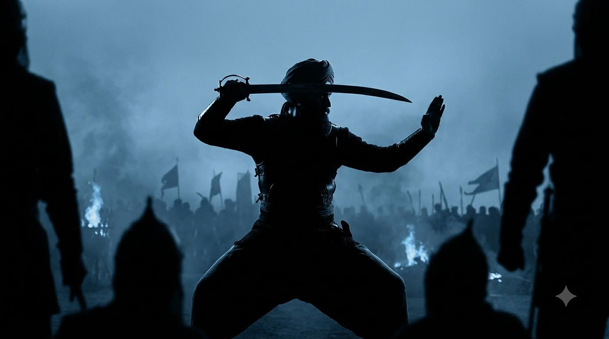
-->* Ghi chú: Học viên làm bài tập tự do trên công cụ của mình, sau đó tổng hợp kết quả (ảnh + prompt) và gửi qua tin nhắn cho người hướng dẫn để nhận feedback.
Phần 1: Tự do ứng biến (10 Ý Tưởng Ấn Độ Cổ Đại)
Làm quen với Prompt. Dựa vào 10 gợi ý bối cảnh, hãy tự chọn Góc máy, Cỡ cảnh & Ánh sáng để tạo ra khung hình của riêng bạn.
Cảnh Toàn Sử Thi (Epic Wide)
Cung điện đá sa thạch ven sông Hằng. Hàng vạn quân mang giáp sắt và voi chiến tập hợp dưới mây đen.
Giới Thiệu Tướng Quân
Dũng tướng vạm vỡ, đeo giáp vai vàng, tay cầm gươm Khanda đứng uy nghi giữa chiến trường rực lửa.
Dân Chúng Sinh Hoạt
Khu chợ sầm uất với các gian hàng gia vị. Dân chúng mặc sari truyền thống buôn bán tấp nập.
Tỳ Kheo Khất Thực
Vị tỳ kheo khoác y phấn tảo, tay ôm bình bát đất sét, đi chân trần qua con đường đất cằn cỗi.
Bắt Trọn Nội Tâm
Khuôn mặt sạm nắng và đôi mắt thông tuệ của một vị tu sĩ già đang ngồi thiền định dưới gốc bồ đề.
Quyền Lực Áp Đảo
Vị vua mặc hoàng bào ngồi vắt chéo chân trên bành ngự của voi chiến khổng lồ. Bầu không khí áp bức.
Sự Tĩnh Lặng Về Đêm
Dân thường gầy gò ngồi quanh đống lửa ngoài rìa vương quốc, nét mặt lo âu khi ánh lửa bập bùng hắt lên.
Góc Nhìn Khách Quan
Nhìn qua vai người lính gác. Phía xa là ngọn tháp đền thờ Hindu đang chìm trong biển lửa.
Nghi Lễ Tế Thần
Các đạo sĩ Brahmin mặc áo trắng đang tung hương liệu vào ngọn lửa thiêng khổng lồ bùng cháy trong đêm.
Cuộc Đụng Độ
Hai chiến binh dũng mãnh đứng đối diện nhau giữa hoang mạc cát bụi mịt mù, chuẩn bị lao vào vòng chiến.
Phần 2: Phân tích & Tái tạo (Reverse Engineering)
Bạn hãy lưu 10 hình ảnh phim gốc từ thư mục bài giảng vào máy tính, thay thế đường dẫn ảnh (src) trong mã nguồn để chúng hiển thị tại đây. Bằng kiến thức đã học, hãy dùng AI tạo ra 1 bức ảnh mới có tỷ lệ, ánh sáng và màu sắc tương đồng nhất với ảnh gốc.
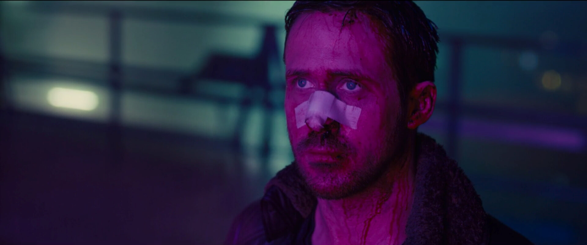
Phim: Blade Runner 2049
Cảm xúc: Lạc lõng, cô đơn
Gợi ý: Chú ý biểu cảm và tone màu, ánh sáng phản chiếu lên nhân vật
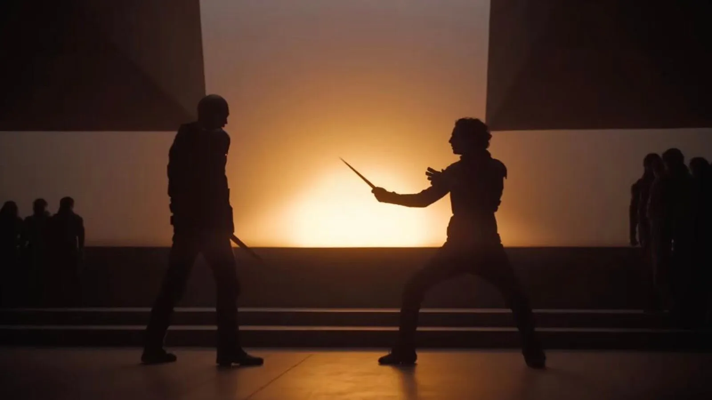
Phim: Dune (2021)
Cảm xúc: Kịch tính, hùng vĩ và uy nghiêm.
Gợi ý: Phân tích hướng ánh sáng chiếu qua khe hở và tỷ lệ con người so với kiến trúc.
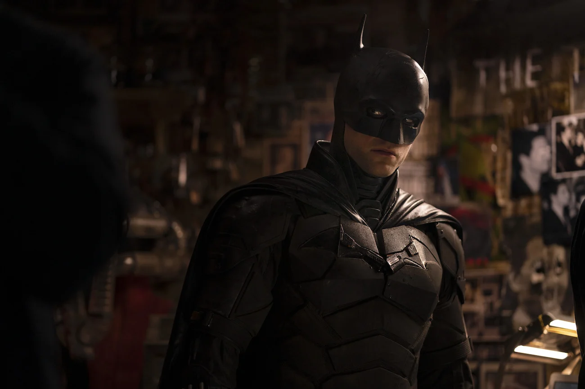
Phim: The Batman (2022)
Cảm xúc: U ám, bí ẩn và nguy hiểm.
Gợi ý: Quan sát cách đạo diễn sử dụng bóng tối (Negative space) và ánh sáng ven (Rim light).
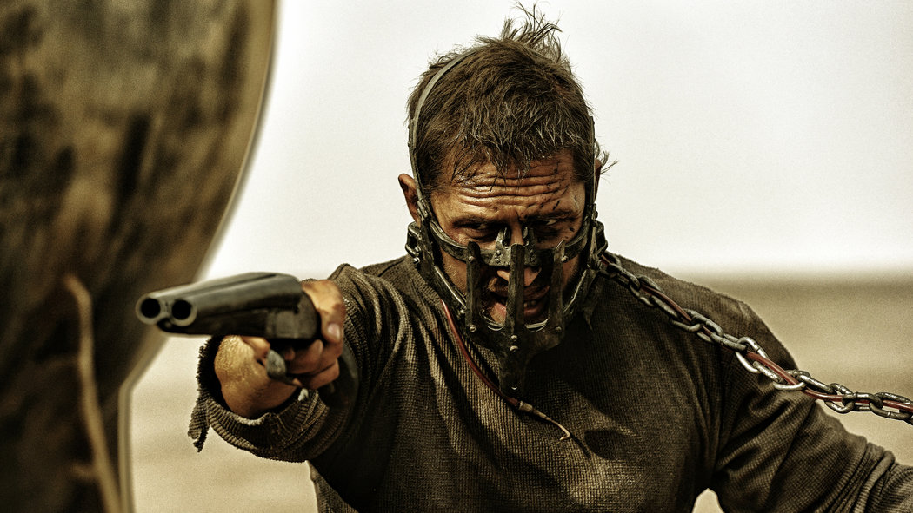
Phim: Mad Max: Fury Road
Cảm xúc: Hỗn loạn, tốc độ và cuồng nộ.
Gợi ý: Chú ý bố cục trung tâm (Center) đặt giữa một bối cảnh hỗn loạn
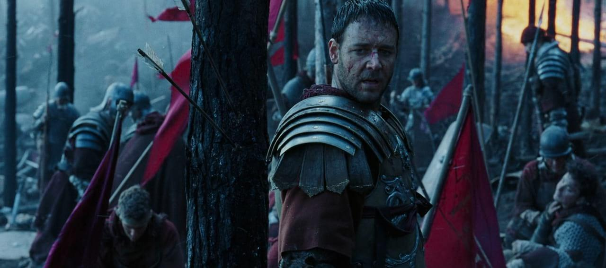
Phim: Gladiator (2000)
Cảm xúc: Bi tráng, vinh quang và hoài niệm.
Gợi ý: Tập trung vào cách xử lý ánh sáng ngược (Backlight) và tone màu lạnh chủ đạo
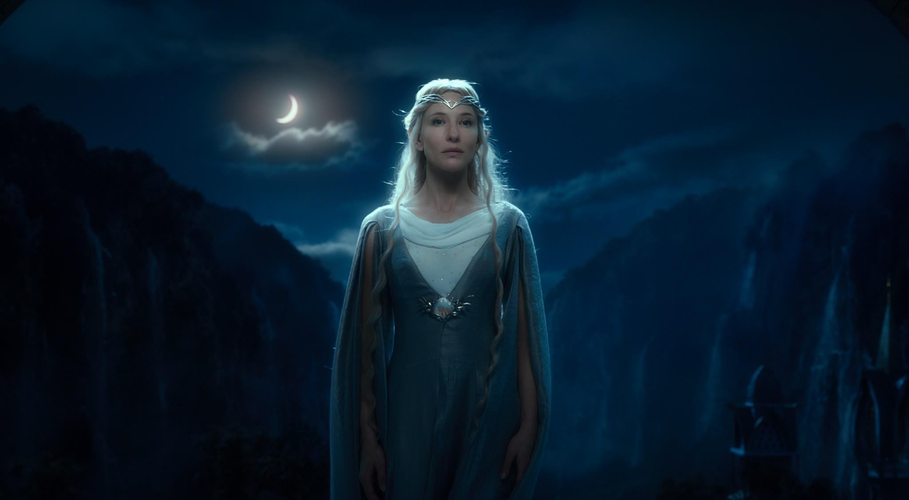
Phim: Lord of the Rings
Cảm xúc: Kỳ ảo, cổ kính và vĩ đại.
Gợi ý: Cỡ cảnh trung để thu trọn vẻ đẹp của nhân vật quyền lực
Phim: The Revenant (2015)
Cảm xúc: Lạnh lẽo, khắc nghiệt và chân thực.
Gợi ý: Bộ phim sử dụng hoàn toàn ánh sáng tự nhiên (Natural Light) và góc máy rộng.
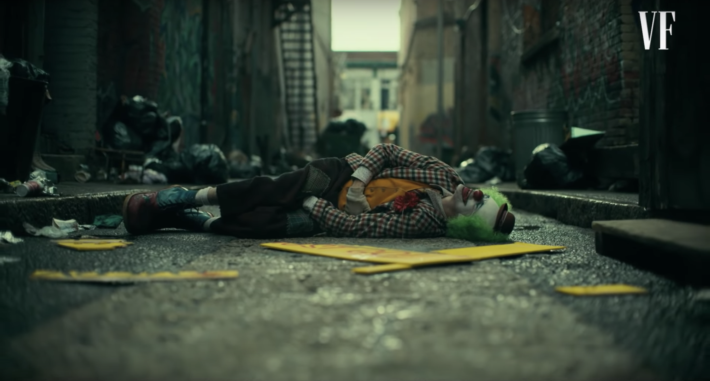
Phim: Joker (2019)
Cảm xúc: Đau đơn, cô độc và ngột ngạt.
Gợi ý: Phân tích sự tương phản giữa hai mảng màu Xanh/Cam (Teal & Orange) và độ sâu trường ảnh.
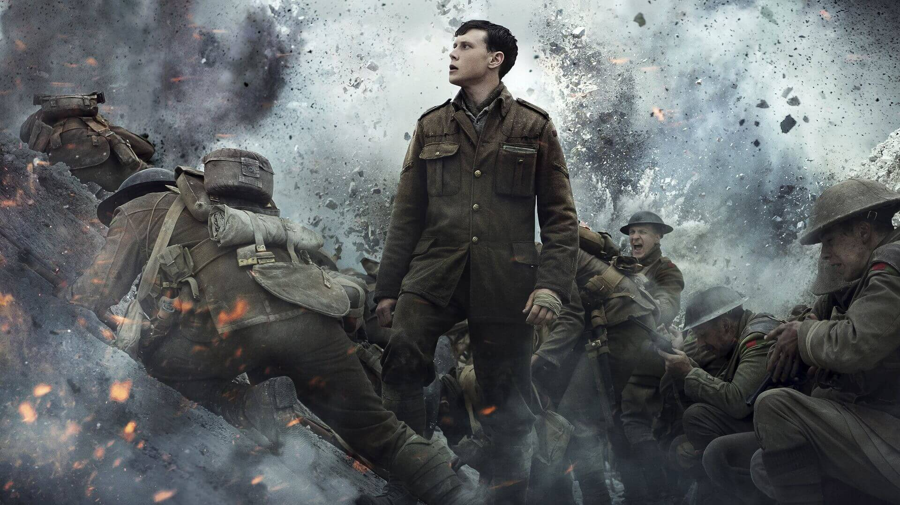
Phim: 1917 (2019)
Cảm xúc: Khốc liệt, dồn dập và cận kề cái chết.
Gợi ý: Góc máy luôn bám sát theo nhân vật giữa khói bụi chiến trường.

Phim: Oppenheimer (2023)
Cảm xúc: Trĩu nặng, ám ảnh và trí tuệ.
Gợi ý: Ánh sáng hắt lên khuôn mặt (High-key) kết hợp với khẩu độ nông làm nhòa phông nền.